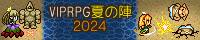

VIPRPG夏の陣2024
概要

夏だ！海だ！VIPRPGだ！
VIPRPG夏の陣2024は、ニュース速報(VIP)内のRPGツクールスレッドで毎年開催されている、ツクール作品を持ち寄り感想を付け合う事を目的とした企画です。
本イベントは2024/09/18を以て更新終了しました。
参加いただきありがとうございました。
更新終了後にもバグ報告やゲーム本体更新が行われている可能性がありますので、
プレイの際は感想掲示板の方もご確認いただけますと幸いです。
日程
07/05 エントリー受付開始
07/26 作品提出受付開始
08/09 作品公開・遅刻作品公開開始
08/16 エントリー受付終了
09/08 作品提出・更新受付終了
→09/08 更新終了
過去の祭り: